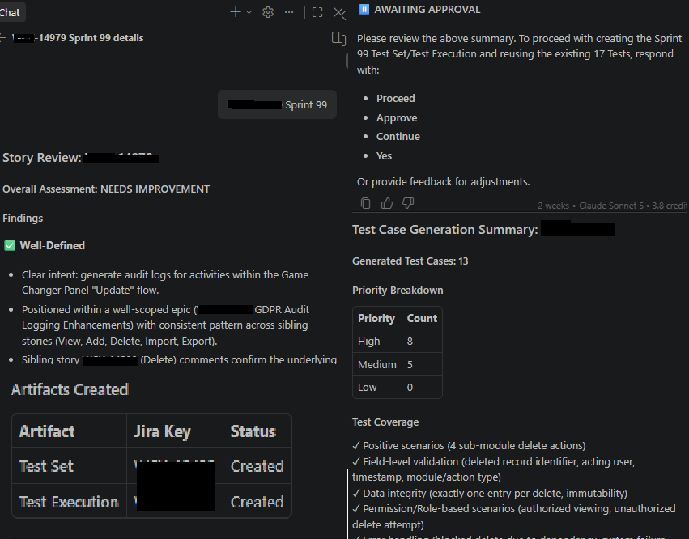

A conceptual QA automation workflow that uses AI to analyze Jira stories, identify testing considerations, generate structured QA artifacts, and reduce repetitive preparation work.
The goal was to explore how AI could assist QA engineers with repetitive activities while keeping the human tester responsible for validation and final decisions.
QA preparation can involve repeatedly reviewing stories, checking acceptance criteria, identifying missing information, creating test scenarios, and preparing test-management artifacts.
An AI-assisted workflow can analyze structured requirements and produce a useful starting point for QA review, allowing testers to spend more time on analysis and validation.
The workflow is designed around Jira as the starting point and keeps a human approval step before test artifacts are created.
Retrieve the Jira story, description, acceptance criteria, and relevant metadata.
AI identifies missing information, test risks, scenarios, edge cases, and QA considerations.
The QA engineer reviews the AI-generated analysis and approves or adjusts the recommendations.
Approved scenarios can be converted into structured test-management artifacts.
The following architecture illustrates how the components could interact in an AI-assisted QA workflow.
Provides the user story, acceptance criteria, comments, status, and relevant project metadata.
Retrieves the story and prepares the information for AI analysis.
Identifies test scenarios, negative cases, ambiguities, risks, and potential coverage gaps.
A human QA engineer validates the recommendations before anything is created or updated.
Approved scenarios can be transformed into test sets, executions, or other structured QA artifacts.
Example output generated from a fictional user story.
Story:
As an employee, I want to submit a time-off request
so that my manager can review it.
QA Analysis:
Readiness:
READY WITH QUESTIONS
Functional Scenarios:
1. Submit valid request
2. Submit request with missing required fields
3. Submit overlapping request
4. Cancel an existing request
5. Manager approves request
6. Manager rejects request
Edge Cases:
- Boundary date selection
- Maximum request duration
- Duplicate submission
- Session expiration
Questions:
- What happens when the selected date is already unavailable?
- Should rejected requests be editable?
- Is there a maximum number of pending requests?
Risk:
MEDIUM
Sample screenshot demonstrating the AI-assisted QA workflow and how the assistant supports structured story analysis.

AI should assist QA engineers, not replace QA judgment. The workflow therefore includes a human review and approval step before AI-generated recommendations are turned into formal test artifacts.
This helps prevent incorrect assumptions from being automatically propagated into the test suite and keeps accountability with the QA engineer.
Reduce repetitive effort spent creating initial test scenarios and QA review notes.
Encourage consistent consideration of positive, negative, boundary, and edge-case scenarios.
Surface ambiguous requirements and potential coverage gaps before development is complete.
Allow QA engineers to spend more time on analysis, exploratory testing, and meaningful validation.
These figures are illustrative portfolio metrics showing how the concept could be evaluated. They are not claimed production measurements.
The value of AI in QA is not simply generating more test cases. The real opportunity is improving the quality and speed of the overall QA workflow.
A useful AI assistant should understand the context of the requirement, identify uncertainty, suggest meaningful coverage, and make the QA engineer's work more efficient without removing human accountability.
This is a fictional and conceptual portfolio example demonstrating an AI-assisted QA workflow. It does not expose confidential, proprietary, customer, or company information.